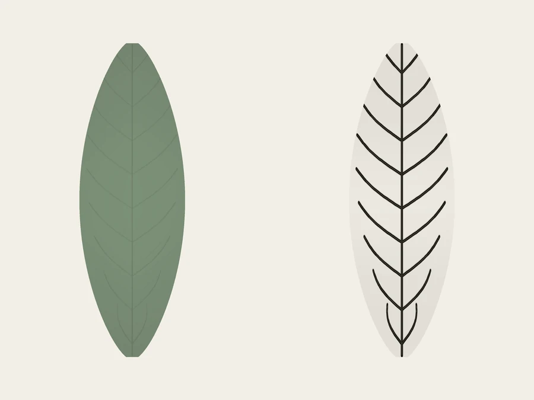
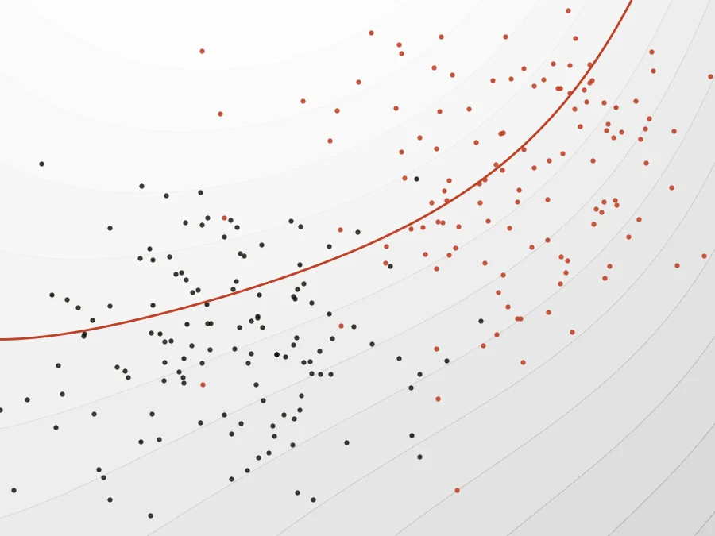
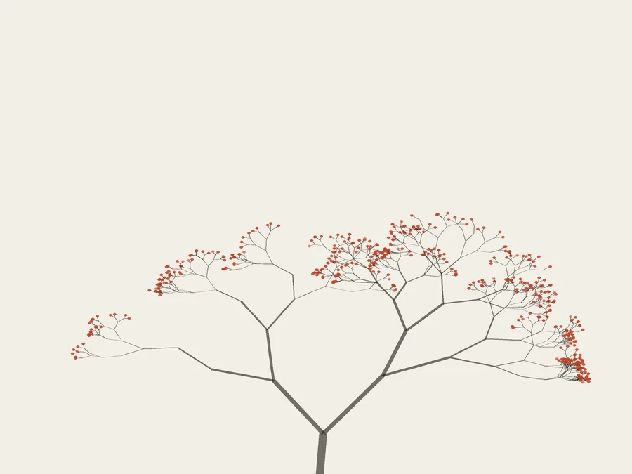
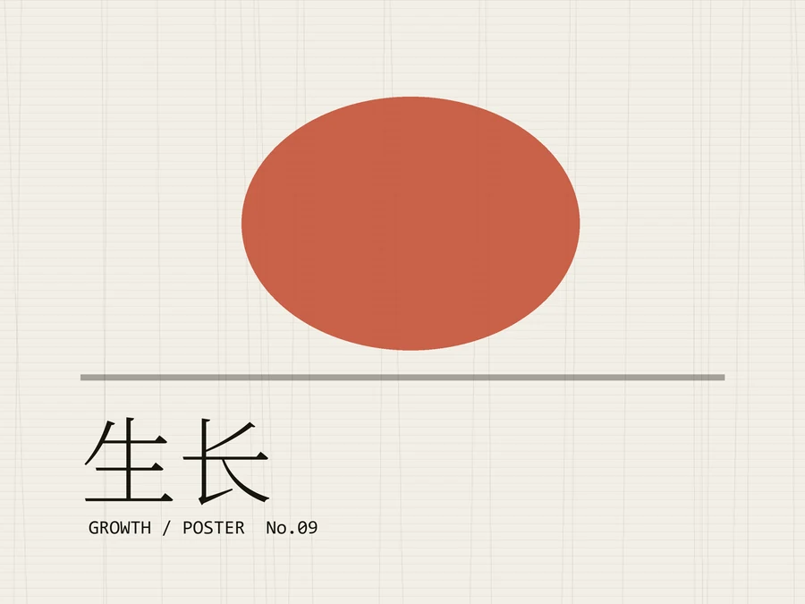
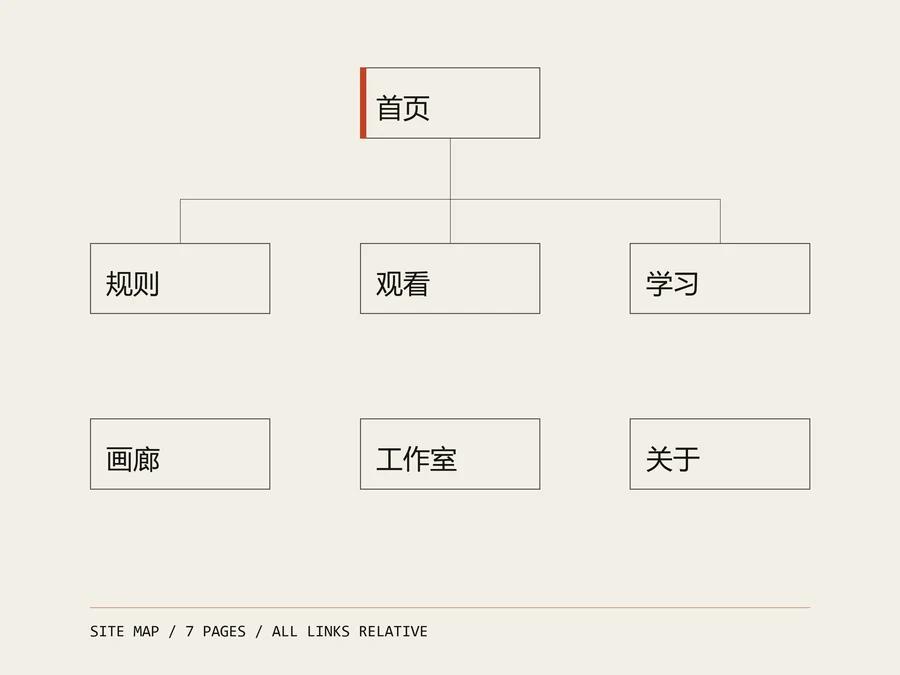

主题 · 涌现
什么是涌现
涌现指的是这样一种现象：整体的行为，没有办法从任何一个部分里读出来。 雪花不是被设计成六角的，鸟群也没有谁在指挥，但它们都有稳定的形状。
-
01
一条规则
每个格子只需要看看左右两个邻居。写成文字不到一行，里面没有任何关于森林或三角形的提示。
-
02
重复很多次
同一件事被反复执行。没有全局的设计，也没有草稿，每一代只根据上一代算出来。
-
03
形状自己出现
滑翔机、分形、决策边界，这些在规则里都没有写。它们是在反复执行的过程中出现的。
前三个房间各配了一个可以动手的实验，后两个房间是这些规则长出来的结果。
六个房间
从一条规则开始，到一台会犯错的机器，再到十二幅没有笔触的画。每一页都可以动手试一下。

01
一条规则，
一条规则，
能长出什么
康威的生命游戏只有四条规则，却能演化出滑翔机和时钟。
进入 · 元胞自动机
02
机器看见的，
机器看见的，
是数字
一张图不过是 0 到 255 的矩阵。转动一个 3×3 的卷积核，看看边缘是怎么算出来的。
进入 · 卷积实验
03
从随机，
从随机，
到秩序
一个真正的神经网络在你打开的页面里训练，误差一点点变小。
进入 · 训练场
04
十二幅生成的画
流场、等高线、泰森多边形、半调网点。每一幅都由一段固定的代码生成。
进入 · 画廊
05
做一张
做一张
自己的海报
选算法、调密度、换配色，生成一张可以下载的海报。
进入 · 海报生成器
06
关于这个网站
用了什么、没用什么，以及几处取巧的地方。
进入 · 关于网站里的图画没有一张来自图库，也没有一张是手绘的。它们都由代码生成， 各自遵循一条很短的规则，重复到足够多次，然后有了形状。
从一条规则开始